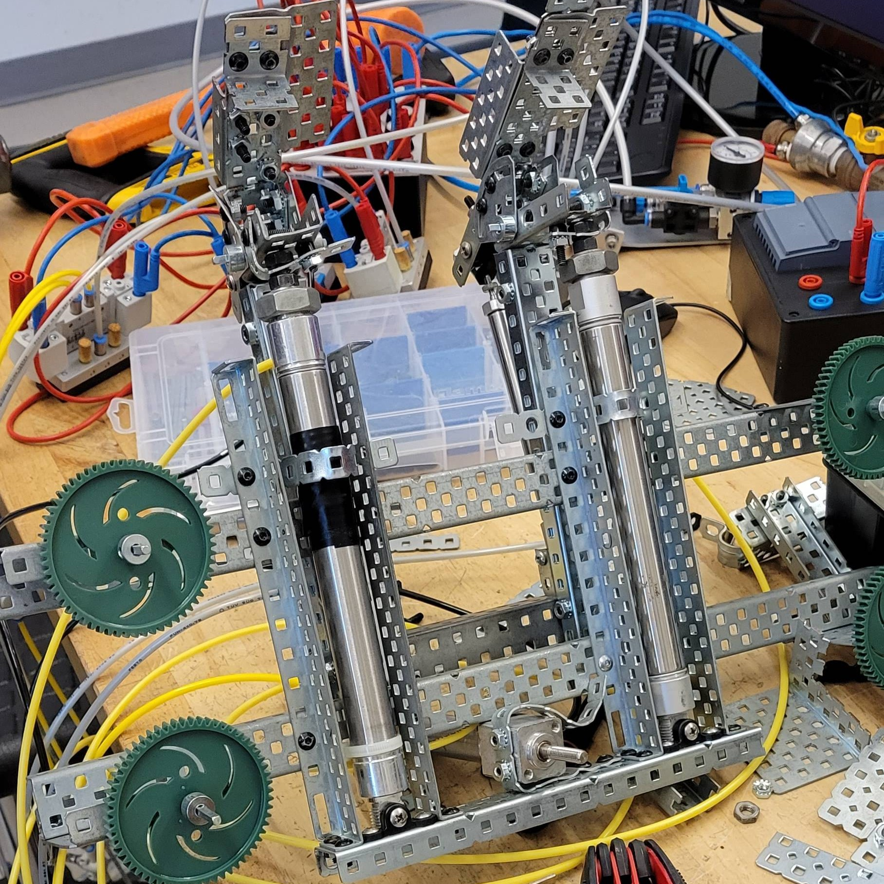
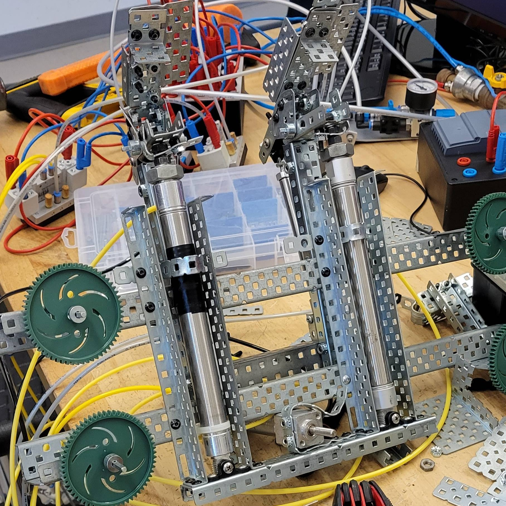

Ladder Climbing Robot
Introduction
This is a project I did back at Anne Arundel Community College for a pneumatics class around 2022. The robot is powered by pneumatic cylinders controlled by a computer program that simulates solenoids and relays. I worked on a team with another student on this project.
The goal was the create a robot that could climb up a ladder made of aluminum extrusion with regularly placed rungs. Most students opted for designs involving claws the bend out of the way of the rungs than catch them on the downstroke. We opted to articulate the claws instead.
 

Development
Early on we adopted a design with hooked claws that are pushed up by the 2 large cylinders. Much like the other teams working in the class, we used a design where the claws bend out of the way of the rung on the upstroke and catch on the downstroke. Due to a mismatch between rung spacing and cylinder length, this approach proved inconsistent and temperamental. Unfortunately I do not have any image documentation of this design as we abandoned it rather quickly in favor of articulated claws.
Using two smaller cylinders attached to the main large cylinders, we could articulate the claws to move out of the way on the upstroke and then swing down to grip the rung and pull it the little bit extra it needed. This added a lot of weight to the design, which made climbing difficult. We ended up using both main cylinders to pull the robot up and added a smaller cylinder we called the "foot" to the bottom that would catch the robot after it advanced a rung.
Outcomes
The project was successful and we were one of the first teams to climb the ladder. We did determine several improvements that could have been made if time was not an issue. The cylinders, especially the foot, could have been attached to the frame better. Because the frame was made of Vex robotics parts and the cylinders were not designed for Vex, attaching them was tricky. Also due to the way the robot climbed, we could have used on one large cylinder instead of two. The second cylinder was essentially pulling the extra weight caused by it being there, which made it unnecessary. The robot's climb can be seen in the videos below, both automatic and manual control.